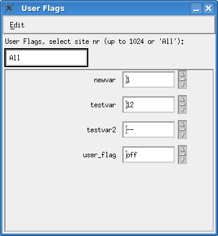

Setting User Flags Procedure In the Testflow Settings Mode window (see Accessing Testflow Settings), click User Flags. The User Flags window opens. The figure below shows, for example, four user flags that were defined in the Testflow Editor, during the development of the Testflow.  Change the flags: Click the corresponding arrow symbols on the right of the flag field.If you are running multi-site tests, you can set the user flags for individual test sites: type the site number, or type All for all sites.Note If you type All, and the information for a flag is inconsistent between sites, two dash characters (--) are displayed. Functional changesIntroduced before SmarTest 6.3.2SmarTest 7.3.1: New selecting mode for site